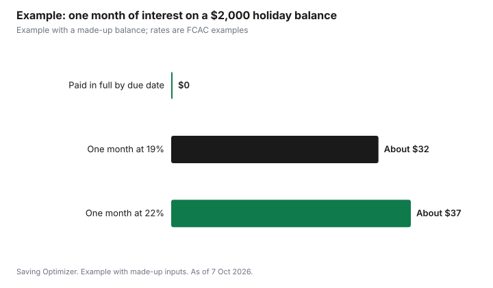

Personal Finance · Canada
January Budget Reset for 2027: A Canadian Plan to Recover From the Holidays
This post contains Amazon.ca affiliate links. If you buy through them, Saving Optimizer may earn a commission at no extra cost to you.
The fastest January budget reset starts with your December credit card statement, not a new spreadsheet. Add up what the holidays actually cost, then pay the statement balance in full by the due date if you can: federally regulated card issuers must give at least a 21-day interest-free grace period on new purchases, and interest starts once you miss it. Cancel free trials that started over the holidays before they renew. Then rebuild a monthly budget from real numbers using the Financial Consumer Agency of Canada's free Budget Planner, and put the year's key dates in your calendar: new TFSA room on January 1 and the RRSP deadline for the 2026 tax year in early 2027.
Key takeaways
- Total December spending from your statements before planning 2027.
- Pay the statement balance by the due date; the grace period is at least 21 days with federally regulated issuers.
- Cash advances and balance transfers have no grace period.
- Cancel trial subscriptions before they renew.
- Use the FCAC Budget Planner and track spending for one or two months.
- Worked example uses made-up figures.
Step 1: add up what December really cost
Pull your December and early January statements for every card and bank account. Total gifts, travel, food, hosting, decorations and anything else you bought for the season. Many people underestimate holiday spending because it is spread across several cards, gift cards and e-transfers. That one total is the most useful number for next year's December spending plan, because it shows what the season really costs you.
- Buy now, pay later plans taken at checkout, which show up as instalments in January and February.
- Gift cards bought for others, which can look like a single grocery or pharmacy charge.
- E-transfers for shared gifts, group dinners or travel.
- Foreign currency charges on online orders from outside Canada.
- Subscriptions started as gifts or for holiday viewing.
Step 2: pay holiday charges before interest starts
The FCAC explains that the grace period begins on the last day of your billing period, and that federally regulated financial institutions must provide at least 21 days. Pay the full statement balance by the due date and purchases cost no interest. Pay less than that and interest applies. FCAC's own examples use 19% for purchases and 22% for cash advances, and rates for retail cards may be higher.
There is no grace period at all on cash advances, cash-like transactions or balance transfers; interest runs from day one. If you used a credit card to buy gift cards or send money over the holidays, check whether it was treated as a cash-like transaction.
If you cannot pay it all
- Pay at least the minimum on every card to avoid fees and possible rate increases.
- Put every extra dollar on the highest-rate balance first.
- Stop adding new charges to the card you are paying down.
- Read our guide to the snowball and avalanche methods to pick an order.

Step 3: cancel trials and subscriptions
Holiday sign-ups often come with free months that renew at full price in January or February. List every subscription on your statements and app store accounts, and cancel the ones you will not use. Our free trial cancel checklist and subscription audit show where to look.
January is also gym sign-up season. In Ontario, you have a 10-day cooling-off period to cancel a gym membership after you receive a written copy of the contract, and you do not need a reason. The province also says gym contracts must end after one year, and can be renewed only if the gym sends a renewal notice 30 to 90 days before the contract expires. If you are signing up for a January resolution, try a few drop-in visits first, read the cancellation terms and put the 10-day deadline in your calendar. Our guide to gym cooling-off and cancellation rights covers the details.
Step 4: rebuild the monthly budget
The FCAC suggests tracking everything you spend for one or two months, from groceries to coffee, and splitting expenses into needs and wants. Its free Budget Planner lets you enter income, savings and expenses, then compares each category with what Canadians usually spend, using green, yellow and red alerts. Use pay stubs, bills and statements rather than guesses.
- Fixed costs first: rent or mortgage, utilities, insurance, phone and internet, transit or car costs.
- Then variable costs: groceries, eating out, clothing, personal care and entertainment.
- Then savings: the FCAC suggests building an emergency fund of 3 to 6 months of living expenses, starting small.
- Then irregular costs: divide yearly costs, such as car registration, gifts and annual subscriptions, by 12 and set that aside monthly.
Compare your budget with actual spending at the end of each month and adjust the categories that are always off. A budget that matches real life is easier to keep than a strict one you abandon by February. If paper works better for you, a planner such as the Clever Fox Budget Planner or a cash-envelope binder like the SKYDUE budget binder can hold the same categories once you fill them from your statements; the free FCAC Budget Planner does the same job online.
Step 5: put the 2027 dates in your calendar
| Date | What happens | Source note |
|---|---|---|
| Jan 1, 2027 | New TFSA room is added, plus any 2026 withdrawals | 2027 dollar limit not yet shown by the CRA as of 7 Oct 2026; the 2026 limit is $7,000 |
| Jan 1, 2027 | New FHSA participation room for the calendar year | $8,000 a year, $40,000 lifetime |
| Early 2027 | RRSP deadline for the 2026 tax year | For 2025 it was March 2, 2026; the CRA posts each year's date |
| Each statement | Credit card due date | At least 21 days after the billing period with federally regulated issuers |
If you withdrew from your TFSA in 2026, the CRA adds that amount back to your room on January 1, 2027. Before contributing, look up your room in your CRA account; our guide to reading your TFSA room on the CRA site explains why the number can lag early in the year.
Step 6: automate the plan
Once the budget balances, automate the parts you want to happen every month. Set savings transfers for the day after payday so the money moves before you can spend it. Put irregular costs, such as next December, car maintenance and annual renewals, in a separate savings account. Set up automatic payments for at least the minimum on every credit card, then pay the rest of the statement balance manually when the statement arrives.
If you contribute to a TFSA or FHSA, a small automatic monthly amount is easier to stick with than one large deposit. Our guides to automating TFSA contributions and automating FHSA contributions explain how to set it up with most banks. Review the plan again at the end of January and the end of February, when you have one or two months of tracked spending to compare against it.
Worked example (made-up figures)
Maya is a made-up example, and all figures are invented. Her December statements show $2,000 in holiday charges on one card. Her budget had assumed $1,200.
- She pays the full $2,000 by the statement due date using $1,400 from her savings account and $600 from her January pay, so she pays no interest.
- If she had carried the $2,000 for a month at FCAC's 19% example rate, a simple estimate of the interest is about $32 ($2,000 x 19% / 12).
- She cancels two streaming trials that would have renewed at a made-up $35 a month in total.
- She sets her next holiday budget at $2,000, not $1,200, and saves about $167 a month toward it.
- She rebuilds her savings over the next few months with the $35 a month from cancelled trials plus a smaller eating-out budget.
Common January mistakes
- Paying only the minimum when the full balance was affordable.
- Moving a balance to a new card without counting the balance transfer fee and the lack of a grace period.
- Starting a strict budget with no room for irregular costs.
- Contributing to a TFSA before confirming the room, which can lead to an over-contribution.
- Signing a long gym contract in the first week of January without reading the cancellation terms.
Sources
- Financial Consumer Agency of Canada, How credit cards work (21-day minimum grace period; no grace on cash advances, cash-like transactions and balance transfers; example rates 19% and 22%), canada.ca, page modified 2025-10-15, as of 7 Oct 2026.
- Financial Consumer Agency of Canada, Making a budget (track 1 to 2 months; needs and wants; Budget Planner; emergency fund of 3 to 6 months), canada.ca, page modified 2025-08-21, as of 7 Oct 2026.
- Government of Ontario, Joining a gym or fitness club (10-day cooling-off period; contracts end after one year; renewal notice 30 to 90 days before expiry), ontario.ca, updated August 12, 2021, as of 7 Oct 2026.
- Canada Revenue Agency, Calculate your TFSA contribution room (withdrawals added back Jan 1), canada.ca, page modified 2026-02-20, as of 7 Oct 2026.
- Canada Revenue Agency, MP, DB, RRSP, DPSP, ALDA, TFSA limits, YMPE and the YAMPE (2026 TFSA limit $7,000; no 2027 figure shown), canada.ca, as of 7 Oct 2026.
- Canada Revenue Agency, Participating in your FHSAs ($8,000 a year), canada.ca, as of 7 Oct 2026.
- Canada Revenue Agency, How contributions affect your RRSP deduction limit (2025 deadline March 2, 2026), canada.ca, page modified 2026-01-29, as of 7 Oct 2026.
- Names, balances and subscription costs in the worked example are made up.
Frequently asked questions
How long is the credit card grace period in Canada?
Federally regulated issuers must give at least 21 days, starting at the end of the billing period. It does not apply to cash advances, cash-like transactions or balance transfers.
What should I do first in a January budget reset?
Total your December spending from statements, then pay the statement balance by the due date if you can.
Is there a free budget tool in Canada?
Yes. The Financial Consumer Agency of Canada offers a free Budget Planner that compares your categories with what Canadians usually spend.
When does new TFSA room arrive?
On January 1. Withdrawals from 2026 are also added back then. The 2027 limit was not yet shown by the CRA as of 7 Oct 2026.
When is the RRSP deadline for the 2026 tax year?
In early 2027. For 2025, it was March 2, 2026. Watch the CRA's RRSP page for the 2026-year date.
Can I cancel a gym membership I signed in January?
In Ontario, you can cancel within 10 days of receiving a written copy of the contract, without giving a reason. Contracts must also end after one year.
Researched and drafted with AI assistance and fact-checked against official Canadian sources. How we create content.
Disclosure: This page contains Amazon.ca affiliate links. As an Amazon Associate, Saving Optimizer earns from qualifying purchases. Education only.